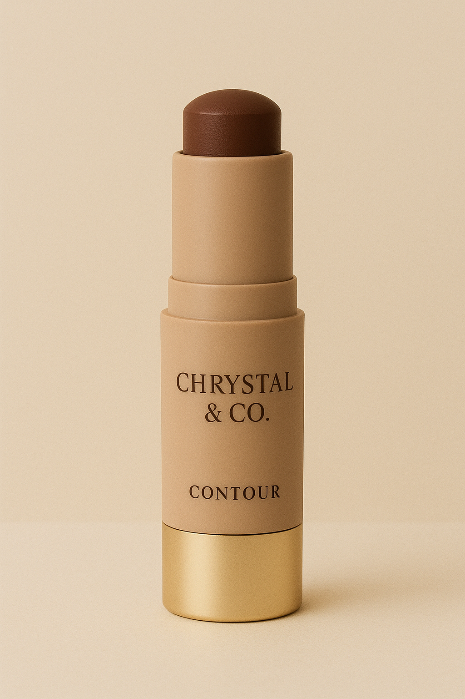

Contour Stick
Betont deine Gesichtszüge für einen natürlich modellierten Look.
Preis: 15.99 CHF
Anwendung & Tipps
- Vorbereitung:
• Beginne mit sauberer, gut hydratisierter Haut und trage eine Foundation auf. - Auftragen:
• Setze den Contour Stick unterhalb der Wangenknochen, an den Schläfen, entlang des Kieferknochens und an den Seiten der Nase an. - Verblenden:
• Verblende das Produkt mit Pinsel oder Schwamm in leichten, nach oben gerichteten Bewegungen für einen natürlichen Schatten. Vermeide das Verblenden nach unten, um das Gesicht nicht optisch zu ziehen.
üí° Tipps:
- Wangenknochen: Von der Ohrspitze zum Mundwinkel, nach oben verblenden.
- Nase: Zwei vertikale Linien am Nasenrücken ziehen für schmalere Optik.
- Stirn: Konturfarbe an den Stirnseiten auftragen, besonders bei hoher Stirn.
- Kieferlinie: Unter dem Kieferknochen konturieren für Definition.
- Verblendung: Gut verblenden, keine harten Linien sichtbar.
- Unterschied zu Bronzer: Contouring erzeugt Schatten, Bronzer verleiht Wärme.